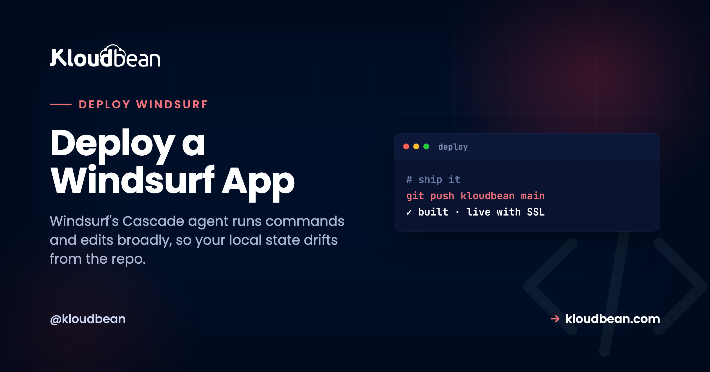

Deploy a Windsurf App: Does It Build From a Clean Clone?

Windsurf is Codeium's agentic IDE, a VS Code fork where the Cascade agent writes and refactors real files across your project and runs terminal commands as it works. That leaves you with ordinary local code you own, in Git. It also leaves you a subtler problem than a browser builder does. To deploy a Windsurf app you need it to build somewhere that isn't your laptop, and your laptop has been quietly collecting state that Cascade created: a package it installed, a file it left untracked, an environment only you have.
So the question that actually predicts a clean deploy isn't "does it run for me?" It's "does it build from a fresh checkout of the repo?" Answer that first and the deploy is boring. This is a short readiness pass built around that one test, then the managed-server steps. For the shared basics every AI-built app needs (ports, env vars, databases), I'll point you at the pillar instead of repeating all of it here.
Before deploying, prove the build is reproducible: clone your repo into a fresh folder, run a clean install, and build. If that works, the server will too. Commit your lockfile, pin your Node or Python version, then launch a server, connect the repo, set your build and start commands, and deploy.
Why "it works in Cascade" isn't the same as deploying a Windsurf app
Cascade is powerful because it doesn't just suggest code, it acts. It installs packages, runs migrations, generates files, and edits across your project without waiting for you to type each command. Genuinely useful. The side effect is that your working directory slowly fills with state that isn't fully captured by what's committed to Git. A dependency the agent installed but never added to package.json. A build artifact sitting untracked. A tool that happens to be on your PATH. Every agentic tool leaves some version of this residue, which is why the first job when you deploy a Claude Code app is reading the diff the agent left behind.
When you run the app locally, all of that invisible state is present, so it works. A server has none of it. It clones your repository into an empty directory and builds from exactly what's committed, nothing more. That's the whole gap in one sentence: local success proves the app runs in your accumulated environment, not that a clean machine can rebuild it. Reproduce it on your own terms first, or the server will do it for you at the worst moment.
The clean-room test
Here's the check that catches most of it before you touch a console. Clone your repo into a throwaway folder, somewhere it can't see your project's node_modules or .env, and build it the way the server will:
# pretend to be the server: a fresh clone, nothing borrowed
cd /tmp
git clone https://github.com/you/your-app.git clean-check
cd clean-check
# install strictly from the lockfile, then build and start
npm ci
npm run build
npm startTwo things make this honest. The /tmp location means the clone can't quietly reuse packages or config from your real project folder. And npm ci installs strictly from the lockfile and refuses to run if the lockfile is missing or out of sync, which is exactly the failure a server would hit. If this builds and starts, your deploy will too. If it doesn't, congratulations, you just found your deploy failure on your own machine, for free, with a real error message to read instead of a 503. Python's the same idea with a fresh virtualenv:
python -m venv .venv && source .venv/bin/activate
pip install -r requirements.txtThe readiness checklist
The clean-room test surfaces most problems, but here's what it's really checking, so you know what to fix when a row fails.
| Check | How to confirm | Why it matters |
|---|---|---|
| Lockfile committed | git ls-files | grep -E "lock|requirements" lists it | A clean install reproduces the exact versions you tested |
| Runtime pinned | engines in package.json, a .nvmrc, or runtime.txt | The server builds on your version, not whatever's default |
| Builds without your .env | the clean clone builds with no secrets present | Missing config shows up now, not as a 503 later |
| Binds the assigned port | no hard-coded 3000 or 8000; reads process.env.PORT | The platform picks the port; a fixed one never sees traffic |
| No global-only deps | the fresh npm ci has everything it needs | Cascade may have installed a tool globally that isn't in package.json |
The first two rows are worth doing deliberately. Commit the lockfile (package-lock.json, pnpm-lock.yaml, yarn.lock, or a pinned requirements.txt), and pin the runtime so the server doesn't quietly build on a different Node major than you did:
// package.json
{ "engines": { "node": "20.x" } }The quick fixes the clean room will flag
When the test fails, it's usually one of the same handful of things every AI-built app hits. Told briefly here, because the deploy an AI-built app pillar covers each in depth:
- A hard-coded port. If Cascade wrote
app.listen(3000), change it toprocess.env.PORT. The full list of localhost assumptions is in the localhost-trap writeup. - Local
.envvalues. They live on your machine; they have to be set on the server. The runtime-versus-build-time details are in environment variables, done right. - A local or dev database. Swap it for a managed one and point a connection string at it. See adding a managed database.
One nice trick that plays to Windsurf's strength: before you deploy, ask Cascade to run the clean-room test for you and report what broke. It can read your whole codebase, so it'll tell you the exact install, build, and start commands, which environment variables the code actually reads, and whether a port is hard-coded anywhere. That conversation removes most first-deploy surprises.
Deploy it on a server you own
Clean clone builds green? Push it to GitHub and take it to production. In the Kloudbean console, click Add Server, pick a Cloud Provider, choose the stack Cascade built in (Node.js for a Node, Next, or Vue app; a Python stack works too), pick the nearest datacenter, and give it 2–4 GB for build headroom. Launch Now gives you a configured server in a few minutes, runtime and process manager and firewall and SSL included.

Open the app, go to Application Administration → Deploy Code, connect GitHub, paste your repository URL, choose the branch, and Clone Repository. Fill the runtime fields with the exact commands that just worked in your clean-room test: App Directory, Port, runtime version, and your Install / Build / Start commands. Because you validated them against a fresh clone, they'll behave the same here. Click Pull & Deploy and the build log streams live.

If your app stores data, launch a managed Postgres or MySQL from DBS → Launch Database and import your local schema. Then, in Runtime Configuration → Environment Variables, paste your .env via Paste .env Content, convert to key/value, and set the real values, pointing the database URL at the instance you just launched.

Add your custom domain under Domain Aliases, point DNS at the server, install a free Let's Encrypt certificate, and turn on automated deployment so every push rebuilds and ships. Your loop becomes: build with Cascade, commit, push, and production updates itself, on a server you own. Whatever framework Cascade built in, the flow is identical; only the Install/Build/Start commands and runtime change.
If it 503s anyway
If you ran the clean-room test, a 503 is now unlikely, and when it happens it's almost always a missing environment variable or a database URL still pointing at your local machine. A 503 means the process isn't running, and the reason is written down. Go to Application Administration, then Logs Viewer, and open the App Errors tab, which is your app.error.log. Use the search box if you already have a guess. App Info (app.info.log) sits alongside it, and Web Requests Logs holds the access log for every request served. Those two files are also on disk at /home/admin/hosted-sites/<app_system_user>/app-logs if you prefer the File Manager. The full 503 playbook has the rest.
The honest limits
Kloudbean runs Linux stacks: Node, Python, PHP, Ruby, and Java, with frameworks like React, Next.js, Vue, Django, and Laravel on top. That spans what Windsurf typically builds. It isn't for Windows/.NET/IIS. "Managed" means the server, stack, SSL, backups, and patching are handled; you own and maintain the application. Since Cascade already hands you real, owned code, this is just the matching home for running it, and a full-stack build lands its front end, API, and database on the one server.
If it builds clean, it ships clean.
Take your Windsurf app to production at kloudbean.com, with a free trial and your first migration done for you. Plans on pricing.
FAQ
How do I deploy an app I built in Windsurf?
Confirm the build is reproducible with the clean-room test, then push to GitHub and deploy on Kloudbean: launch a server, connect the repo in Deploy Code, set your install/build/start commands, add a database and environment variables, and point your domain with SSL. Windsurf produces standard code, so it deploys like any app.
Why does my Windsurf app build locally but fail on the server?
Because your local machine has state the repo doesn't. Cascade may have installed a package globally, left a dependency out of package.json, or built against a runtime version the server doesn't use. The server builds from a clean clone, so reproduce that: clone into a fresh folder, run npm ci, and build. Whatever fails there is your deploy bug.
What is the clean-room test?
Cloning your repo into an empty folder (like /tmp), running a strict install (npm ci or pip install -r requirements.txt), and building. It mimics exactly what the server does, so it catches missing lockfiles, unpinned runtimes, and global dependencies before you deploy rather than after.
Do I need to export anything from Windsurf?
No. Windsurf edits real local files, so there's nothing to export. Your code is already on your machine and, ideally, in Git. Push it to GitHub and deploy from there.
Does it matter which framework Cascade used?
Not for the flow. Node, Next.js, Vue, and Python all deploy the same way through Deploy Code. Only the install, build, and start commands and the runtime version differ, which is exactly what your clean-room test already confirmed.
How do my environment variables get to the server?
You move them. Paste your local .env into Runtime Configuration, Environment Variables using the Paste .env Content tab, convert to key/value, and save. Point the database values at your new managed database, and never commit the .env itself.